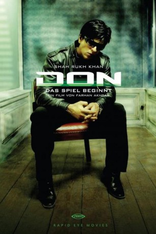

#2108 Don - Das Spiel beginnt
 
 IMDB-Wertung: 7.2 / 10
IMDB-Wertung: 7.2 / 10  Metascore: 0
Metascore: 0 
Um die malaysische Drogenmafia zu zerschlagen, bringt der indische Geheimdienst einen Doppelgänger des skrupellosen Gang-Chefs Don ins Spiel. Der unbescholtene Vijay sieht ihm zum verwechseln ähnlich und findet sich bald zwischen allen Fronten wieder. Denn sein Kontaktmann wurde ermordet und seine wahre Identität ausgelöscht. Mit der indischen Polizei und der Drogenmafia auf den Fersen rennt und kämpft er um sein Leben.
Jahr: 2006
Dauer: 171 Minuten
FSK: 12
Land: Indien Studio: Rapid Eye MoviesTonspuren:
Untertitel: Deutsch,
Auflösung: 1080p (1920x816) Größe: 11059 MB
Genre: Action, Thriller, Krimi
Regisseur: Farhan Akhtar
Drehbuch: Salim Khan, Javed Akhtar, Farhan Akhtar
Soundtrack: Shankar Mahadevan, Loy Mendonsa, Ehsaan Noorani
Darsteller:
 Shah Rukh Khan als Don / Vijay
Shah Rukh Khan als Don / Vijay- Priyanka Chopra als Roma
- Arjun Rampal als Jasjit Ahuja
- Isha Koppikar als Anita
 Boman Irani als DCP P De Silva / Vardhan
Boman Irani als DCP P De Silva / Vardhan Om Puri als CBI Officer Vishal Malik
Om Puri als CBI Officer Vishal Malik- Tanay Chheda als Deepu
 Kareena Kapoor als Kamini
Kareena Kapoor als Kamini- Pavan Malhotra als Narang
- Rajesh Khattar als
- Chunky Pandey als TJ
- Diwakar Pundir als Ramesh
- Sandrine Verrier Seth als TJ's moll
- Sidhart Jyoti als Insp. Verma
- Shamsher Sidhu als Vikram
- Shakeel Khan als Mac
- Nor Zamshuri Ramli als Kumar
- Shaharuddin Thamby als Malaysian officer 1
- Aman Shah Abu Kassim als Malaysian officer 2
- Rahim Omar als Malaysian fake cop 1
- Darleep Singh als Malaysian fake cop 2
- Kuldeep Sareen als Jairaj
- Raakesh Maudgal als Inspector Feroz Khan
- Micky Makhija als Mr. Joshi
- Nishith Ranjan als Jasjit's friend
- Bikramjeet Kanwarpal als Doctor Ashok Khilwani
- Vijayanthi Iyer als Nurse Neha
- Avani Batra als NDTV reporter
- Naeim Ghalili als Malay businessman
- Nissar Khan als Haatim Quershi
- Yasmin Isa als Waitress
- Haflin Saiful als Singhania's girlfriend
- Greg Gasson als Goon on Plane
- Akhil Mishra als Migrant worker 1
- Jayant Gadekar als Migrant worker 2
- Shakun Batra als Migrant worker 3
- Satyajit Sharma als Mystery man
- Ravinderdeep Sikandar als Vardhan's henchman 1
- Leeyawchoy als Hostage taker 1
- Yank Kassim als Anita's henchman
- Sushma Reddy als Geeta Ahuja
- Angelo Sahin als Paris body guard , uncredited
Datei: X:\HD-Eastern-Modern(A-M)\Don - Das Spiel beginnt (2006, FSK12, 1920x816).mkv seit 05.10.2015
Festplatte: HD Eastern+Western
 Es gibt insgesamt 104 Filme in der Gruppe 'HD-Eastern-Modern(A-M)'
Es gibt insgesamt 104 Filme in der Gruppe 'HD-Eastern-Modern(A-M)'